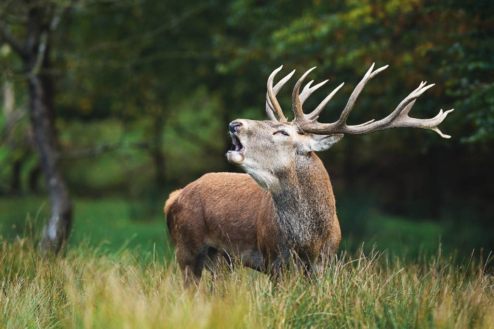
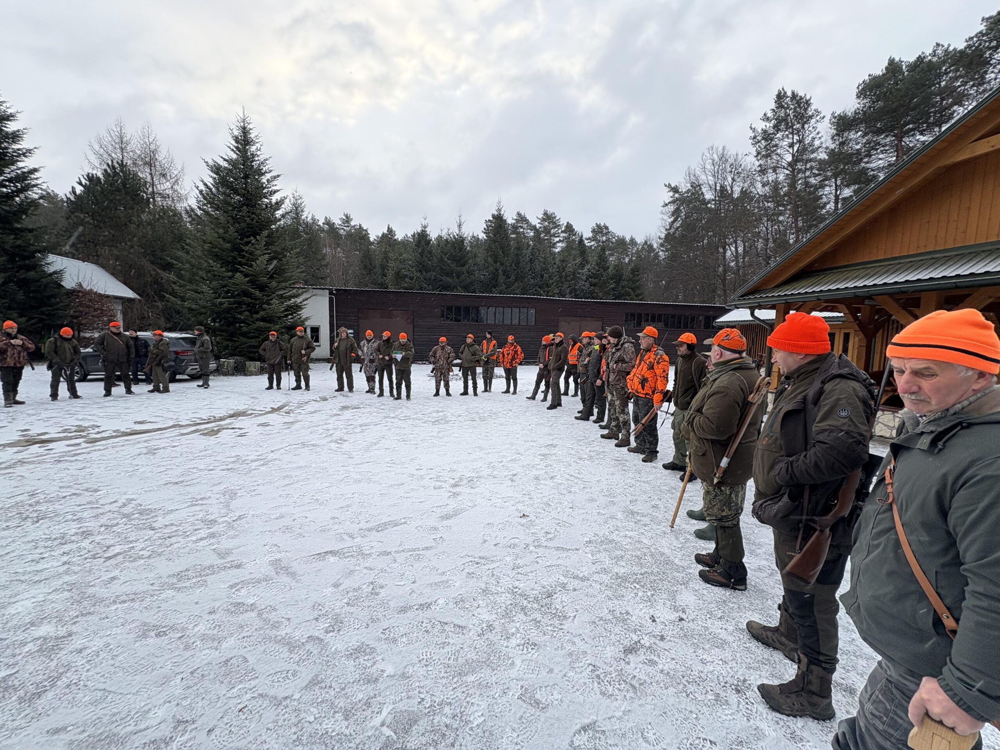
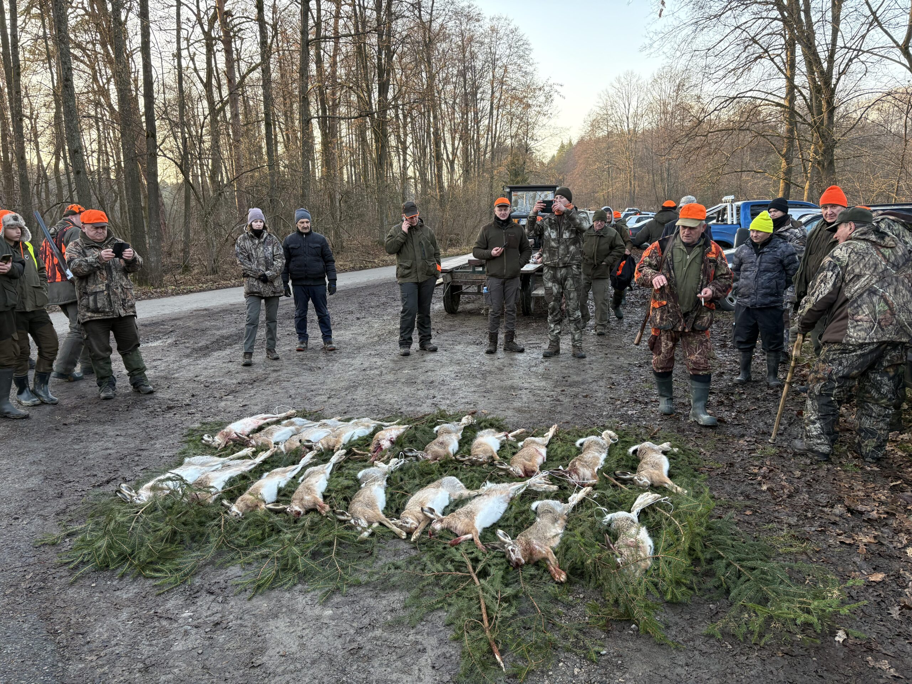
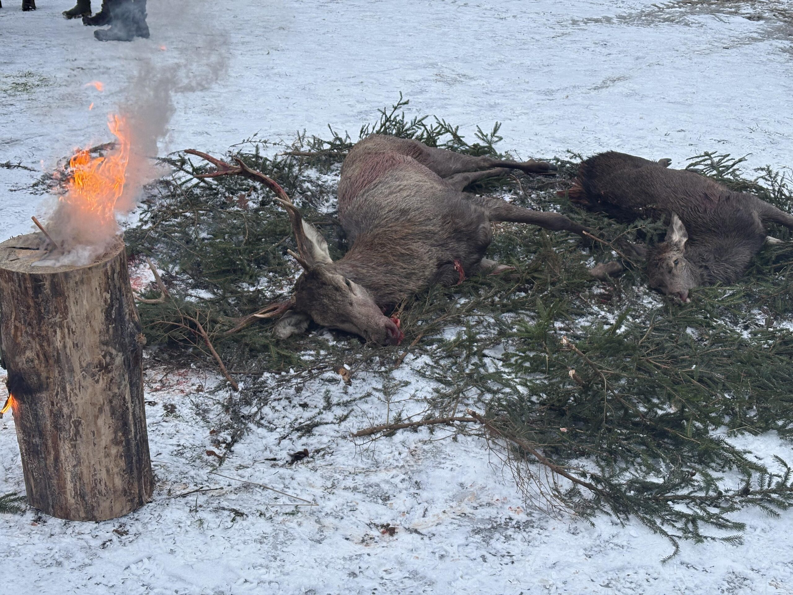
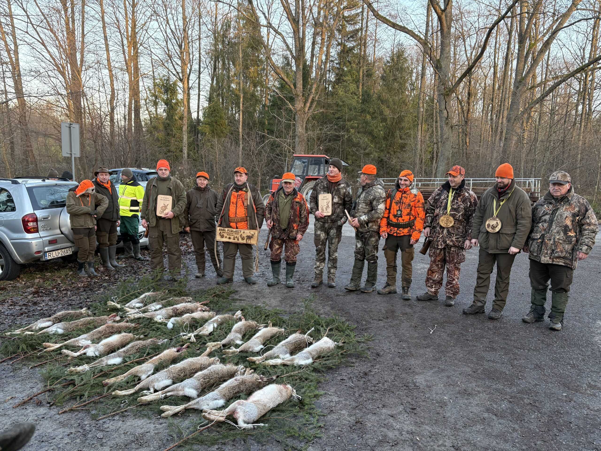
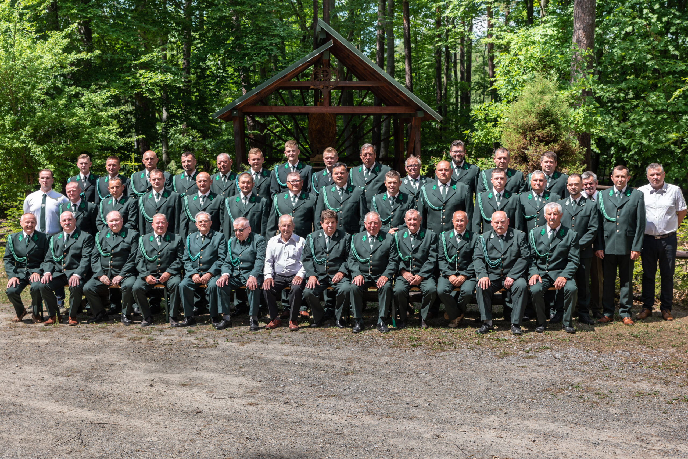

Tradycja • Gospodarka • Ochrona przyrody
Koło Łowieckie „Jeleń” Oleszyce
Od 1948 roku prowadzimy zrównoważoną gospodarkę łowiecką, dbamy o populacje zwierzyny, ochronę siedlisk i zachowanie bogactwa przyrody naszych łowisk.

Aktualności
-

Plan polowań 2026/2027
Darz Bór poniżej przedstawiamy plan polowań na sezon łowiecki 2026/2027: Plan polowań koła łowieckiego Jeleń 2026-2027Pobierz Darz Bór
-

Konsultacje społeczne
Koledzy i sympatycy łowiectwa zachęcamy do wzięcia udziału w konsultacjach społecznych na stronie Sejmu. Ustawa wnosi szereg szkodliwych…
-

Zapraszamy na XXIII Galę Myśliwską
Serdecznie zapraszamy wszystkich sympatyków myślistwa na XXIII galę myśliwską która odbędzie się 27 czerwca w Gminnym Ośrodku Wypoczynku…
Galeria




